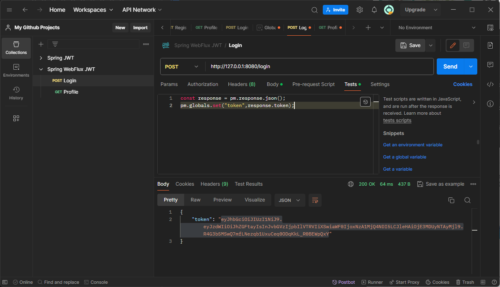

Automatically refreshing access token in Postman
What problem do we want to address?
When using Postman with an access token-secured website, you’ve probably encountered an annoying problem. You need to call the endpoint to refresh the token:
Then you need to copy the token returned by the endpoint and manually paste it into the request you want to execute:
How to refresh a token without copying it manually?
Postman offers the functionality of user-defined variables. You can find them in the Environments tab. Let’s define a global variable:

Then, in the token refresh request, we need to add JavaScript code that will retrieve the token from the response and save it to our variable:
const response = pm.response.json();
pm.globals.set("token",response.token);
You can add this code in the Tests tab:
Now we can test the operation of this script. Hit Send and see if your variable received a new value:
The last step is to use the token to authenticate other requests. Variables can be used with double curly brackets:
{{test}}
Use it in the Authentication tab, hit Send, and see if your token works as expected: